Ceteris Paribus Plots
Przemyslaw Biecek
2018-08-08
ceteris_paribus.RmdIntroduction
First, let’s create explainers for random Forest model and linear model
library("DALEX")
library("randomForest")
library("ceterisParibus")
set.seed(59)
# set default theme
theme_set(theme_bw() + theme(text = element_text(size = 18)))
# preprare model
apartments_rf_model <- randomForest(m2.price ~ construction.year + surface + floor +
no.rooms + district,
data = apartments)
explainer_rf <- explain(apartments_rf_model,
data = apartmentsTest[,2:6],
y = apartmentsTest$m2.price)Simple plots
Let’s start with plots for a single observation.
apartments_A <- apartmentsTest[958,]
cp_rf_A <- ceteris_paribus(explainer_rf, apartments_A, y = apartments_A$m2.price)
plot(cp_rf_A, show_profiles = TRUE, show_observations = TRUE,
selected_variables = c("surface","construction.year"))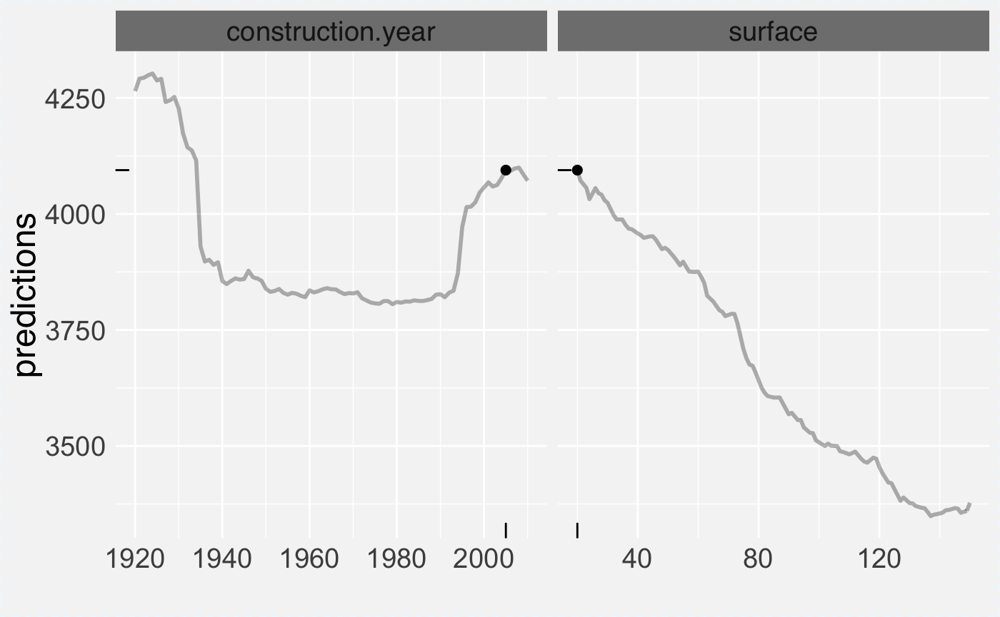
Here are plots for neighbours of this observation.
apartments_B <- select_neighbours(apartmentsTest, apartmentsTest[958,], n = 15)
cp_rf_B <- ceteris_paribus(explainer_rf, apartments_B, y = apartments_B$m2.price)
plot(cp_rf_B,
show_profiles = TRUE, show_observations = TRUE, show_rugs = TRUE,
selected_variables = c("surface","construction.year"))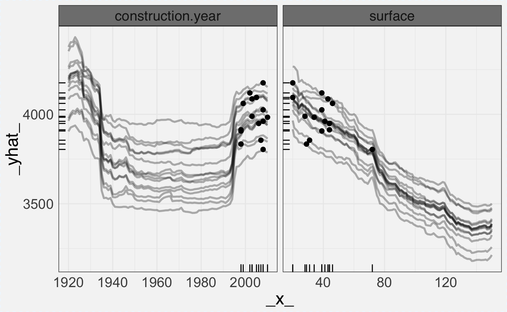
Here we have an example for a subset of observations and only points.
apartments_C <- select_sample(apartmentsTest, n = 15)
cp_rf_C <- ceteris_paribus(explainer_rf, apartments_C, y = apartments_C$m2.price)
plot(cp_rf_C,
show_profiles = FALSE,
selected_variables = c("surface","construction.year"))
Only rugs
plot(cp_rf_C,
show_profiles = FALSE, show_observations = FALSE, show_rugs = TRUE,
selected_variables = c("surface","construction.year"))
Only profiles
plot(cp_rf_C,
show_profiles = TRUE, show_observations = FALSE,
selected_variables = c("surface","construction.year")) 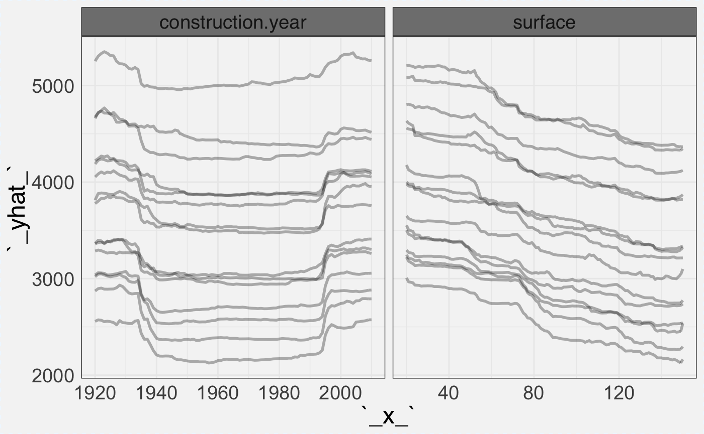
Only residuals
plot(cp_rf_C,
show_profiles = FALSE, show_observations = FALSE, show_residuals = TRUE,
selected_variables = c("surface","construction.year"))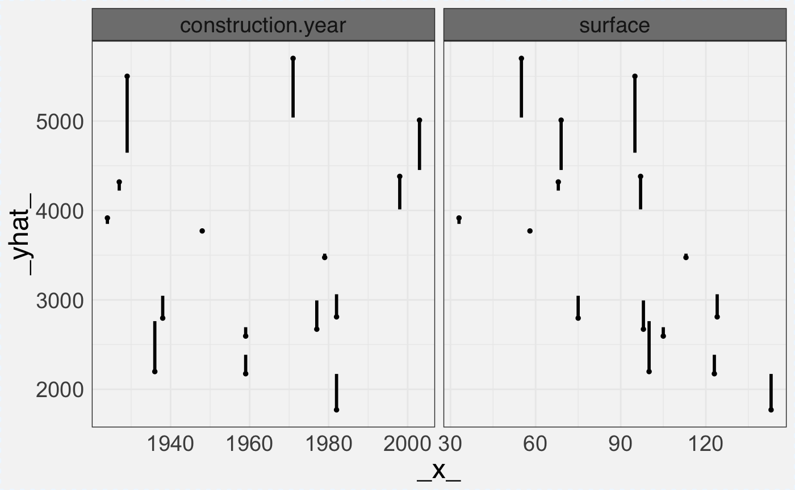
Only average profile
plot(cp_rf_C,
show_profiles = TRUE, show_observations = FALSE,
aggregate_profiles = mean, size = 2,
selected_variables = c("surface","construction.year"))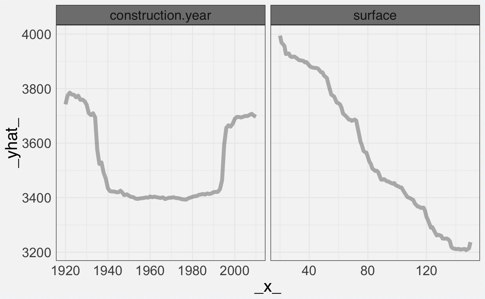
Colors correspond to district
plot(cp_rf_C,
show_profiles = TRUE, show_observations = FALSE,
color = "district", alpha = 1,
selected_variables = c("surface","construction.year", "district")) 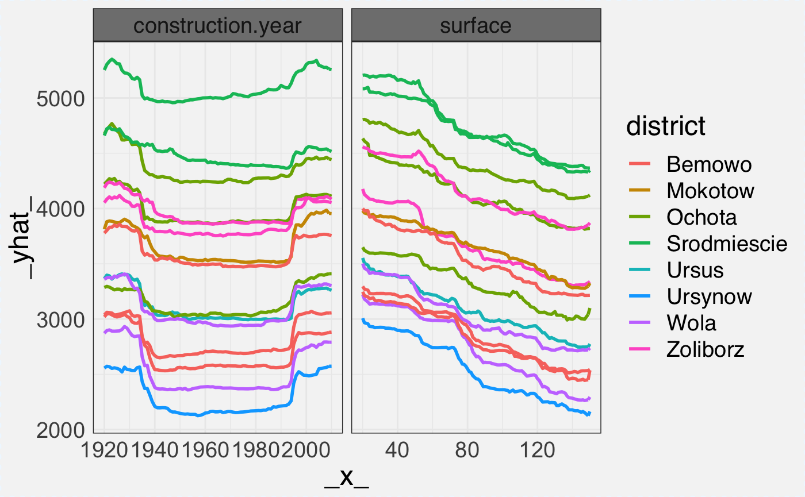
Colors correspond to surface.
plot(cp_rf_C,
show_profiles = TRUE, show_observations = TRUE,
color = "surface", alpha = 1,
selected_variables = c("surface","construction.year"))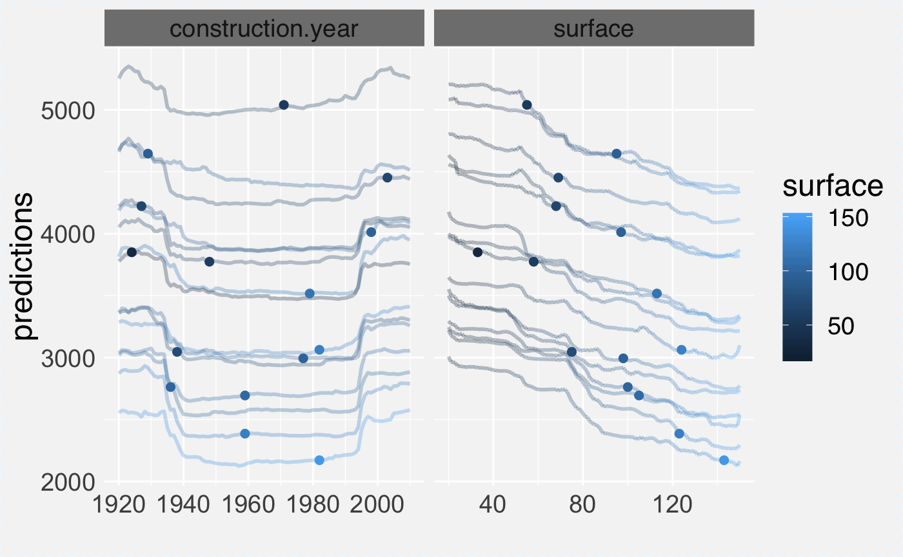
Observations without rugs.
plot(cp_rf_C,
show_profiles = TRUE, show_observations = TRUE,
selected_variables = c("surface","construction.year"))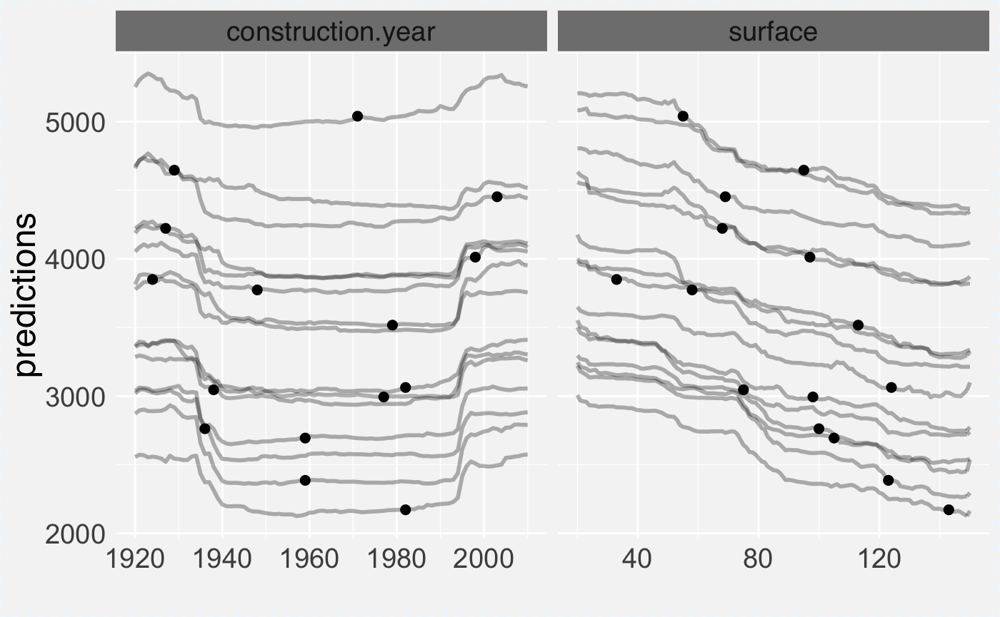
Different colors for different elements.
plot(cp_rf_C,
show_profiles = TRUE, show_observations = TRUE, show_rugs = TRUE,
show_residuals = TRUE,
color = "blue", color_points = "orange", color_residuals = "red", color_rugs = "green",
alpha = 0.3, alpha_points = 0.3, alpha_residuals = 0.5, alpha_rugs = 1,
size_points = 4, size_rugs = 0.5,
selected_variables = c("surface","construction.year"))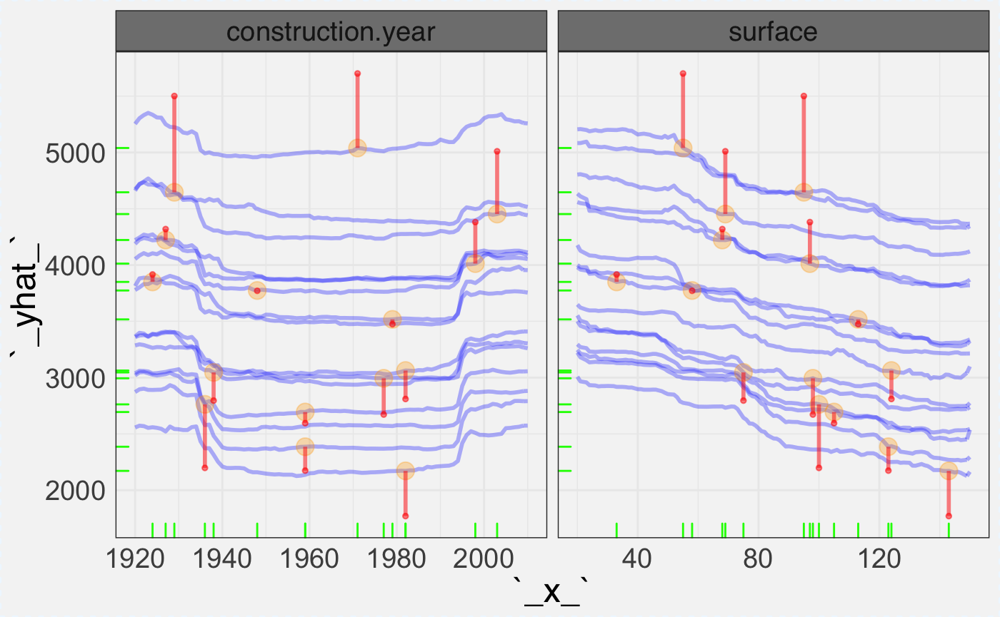
Complex plots
Here we are going to mix two or more layers.
First one presents individual profiles and the average between profiles.
# mixtures
plot(cp_rf_C,
show_observations = FALSE, show_rugs = TRUE,
show_residuals = TRUE, color_residuals = "red", size_residuals = 2,
selected_variables = c("surface","construction.year")) +
ceteris_paribus_layer(cp_rf_C,
show_observations = FALSE, show_rugs = FALSE,
aggregate_profiles = mean, size = 2, alpha = 1,
selected_variables = c("surface","construction.year")) 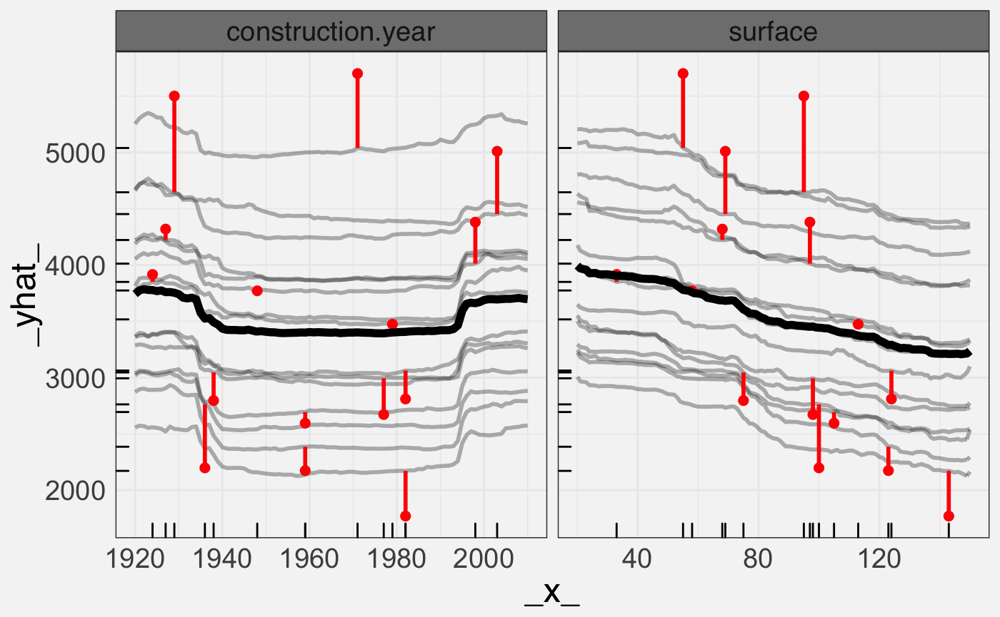
Neighbourings for two observations.
apartments_D <- select_neighbours(apartmentsTest, apartmentsTest[348,], n = 15)
cp_rf_D <- ceteris_paribus(explainer_rf, apartments_D, y = apartments_D$m2.price)
plot(cp_rf_B,
show_observations = FALSE, show_residuals = TRUE,
color_residuals = "blue",
selected_variables = c("surface","construction.year")) +
ceteris_paribus_layer(cp_rf_D,
show_observations = FALSE, show_residuals = TRUE,
color = "orange", color_residuals = "red",
selected_variables = c("surface","construction.year")) 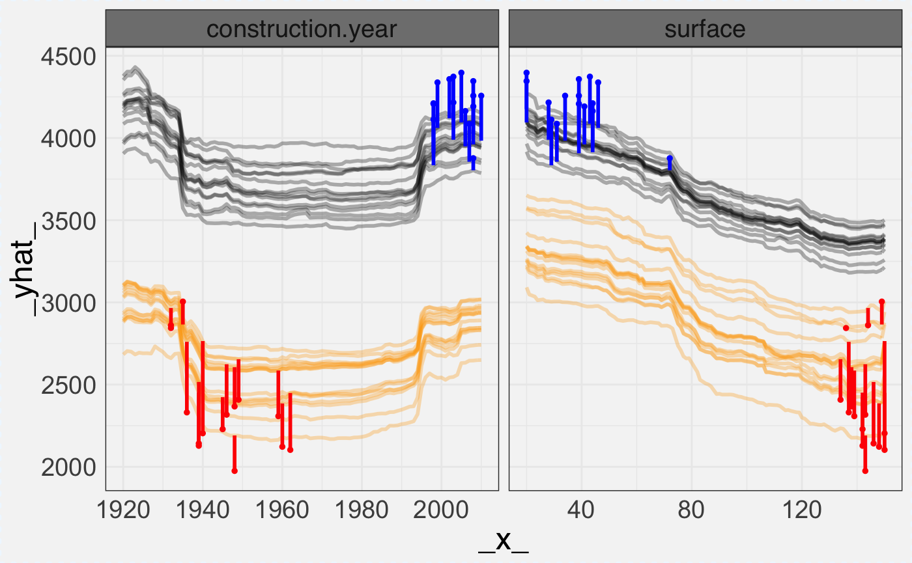
Profiles for two models: random forest and SVM.
library("e1071")
apartments_svm_model <- svm(m2.price ~ construction.year + surface + floor +
no.rooms + district, data = apartments)
apartments_rpart_model <- best.rpart(m2.price ~ construction.year + surface + floor + no.rooms + district, data = apartments)
explainer_svm <- explain(apartments_svm_model,
data = apartmentsTest[,2:6], y = apartmentsTest$m2.price)
explainer_rpart <- explain(apartments_rpart_model,
data = apartmentsTest[,2:6], y = apartmentsTest$m2.price)
apartments_E <- apartmentsTest[958,]
cp_rf_E <- ceteris_paribus(explainer_svm, apartments_E, y = apartments_E$m2.price)
apartments_F <- apartmentsTest[958,]
cp_rpart_F <- ceteris_paribus(explainer_rpart, apartments_F, y = apartments_F$m2.price)
plot(cp_rf_A,
show_observations = FALSE, show_rugs = TRUE, show_residuals = TRUE,
color_residuals = "blue",
selected_variables = c("surface","construction.year")) +
ceteris_paribus_layer(cp_rf_E,
show_observations = FALSE, show_rugs = TRUE, show_residuals = TRUE,
color = "orange", color_residuals = "red",
selected_variables = c("surface","construction.year"))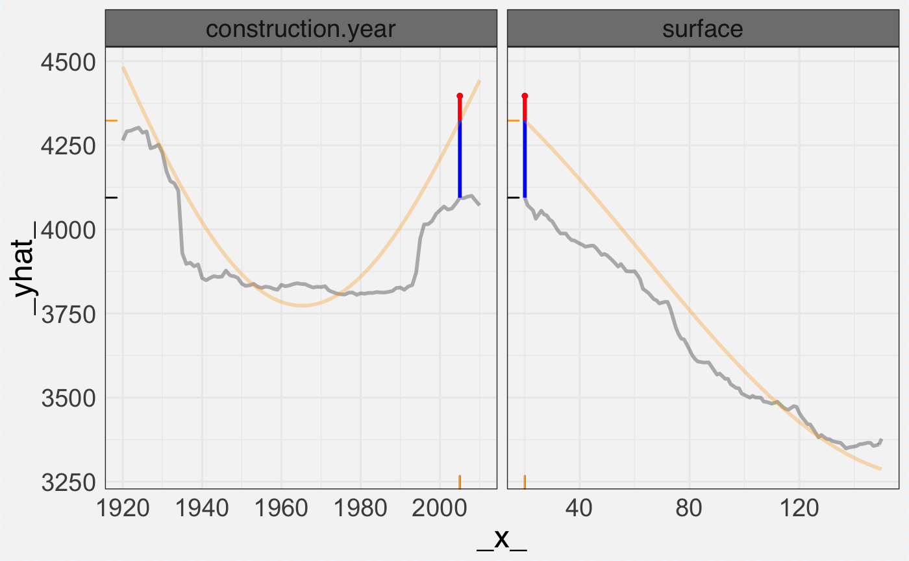
Both models in a single layer
plot(cp_rf_A, cp_rf_E, cp_rpart_F,
color = "_label_",
selected_variables = c("surface","construction.year"))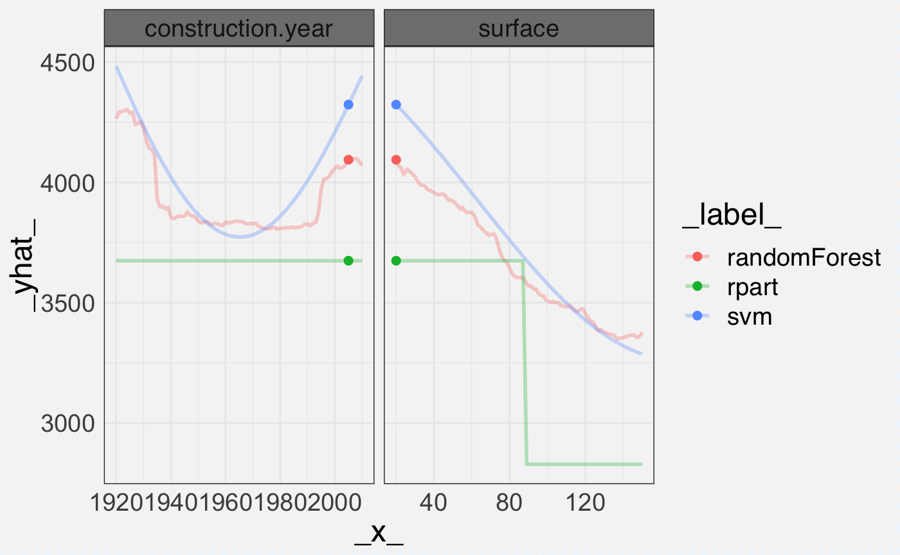
Cheatsheet
Images and codes used in the cheatsheet
apartments_A <- apartmentsTest[2,]
cp_rf_A <- ceteris_paribus(explainer_rf, apartments_A, y = apartments_A$m2.price)
plot(cp_rf_A,
alpha = 0.5, size_points = 4,
selected_variables = "surface",
as.gg = TRUE) + xlab("") + ylab("price [EUR]") + theme_light()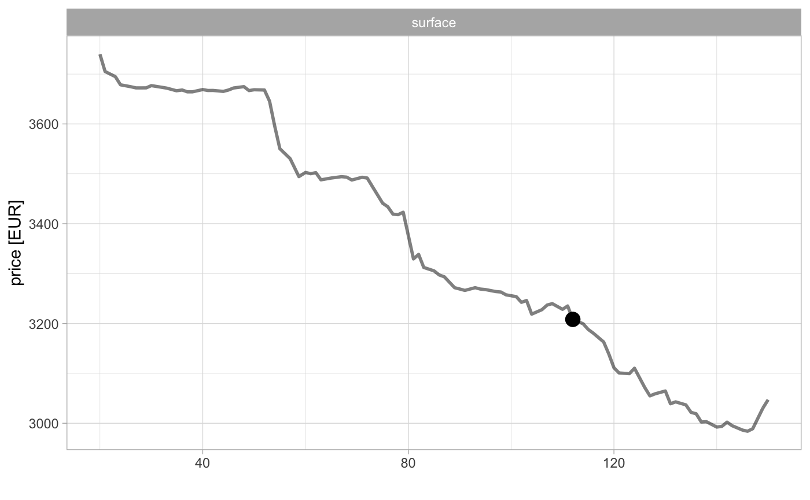
apartments_B <- select_neighbours(apartmentsTest, apartments[1,], n = 10)
cp_rf_B <- ceteris_paribus(explainer_rf, apartments_B, y = apartments_B$m2.price)
plot(cp_rf_B,
show_rugs = TRUE, show_residuals = TRUE,
selected_variables = "surface", color_residuals = "red", size = 0.5,
as.gg = TRUE) + xlab("") + ylab("price [EUR]") + theme_light() 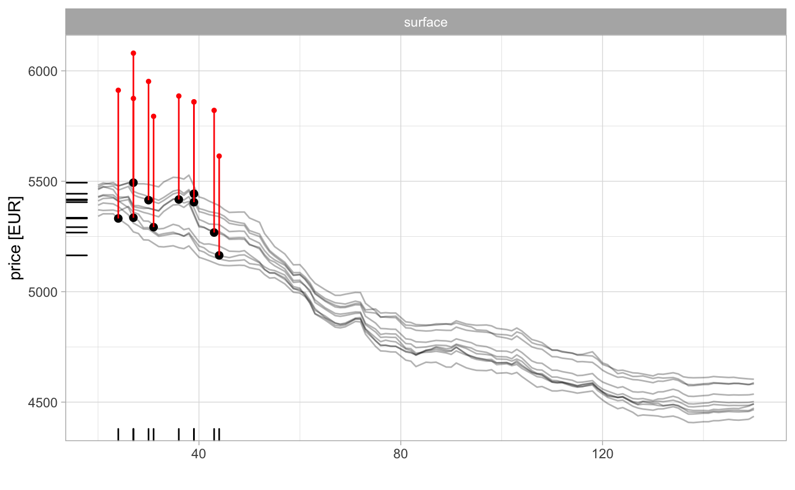
apartments_C <- select_sample(apartmentsTest, n = 15)
cp_rf_C <- ceteris_paribus(explainer_rf, apartments_C, y = apartments_C$m2.price)
plot(cp_rf_C,
show_observations = TRUE, show_rugs = TRUE, size = 0.3, size_points = 0.5,
selected_variables = "surface") +
ceteris_paribus_layer(cp_rf_C,
show_observations = FALSE,
aggregate_profiles = mean, size = 2, alpha = 1,
selected_variables = "surface",
as.gg = TRUE) + xlab("") + ylab("price [EUR]") + theme_light() 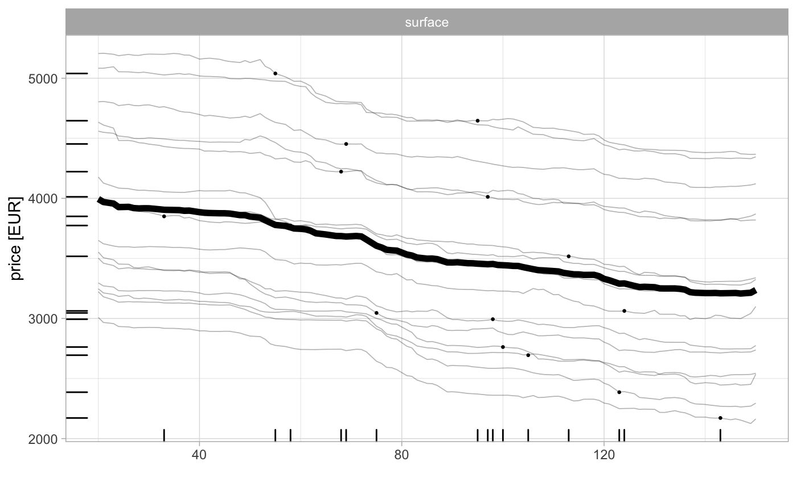
apartments_D <- select_neighbours(apartmentsTest, apartmentsTest[348,], n = 15)
cp_rf_D <- ceteris_paribus(explainer_rf, apartments_D, y = apartments_D$m2.price)
plot(cp_rf_B,
show_observations = FALSE, show_residuals = TRUE,
color_residuals = "blue", alpha = 0.5, size = 0.5,
selected_variables = "surface") +
ceteris_paribus_layer(cp_rf_D,
show_observations = FALSE, show_residuals = TRUE,
color = "orange", color_residuals = "red", alpha = 0.5, size = 0.5,
selected_variables = "surface",
as.gg = TRUE) + xlab("") + theme_light() + ylab("price [EUR]")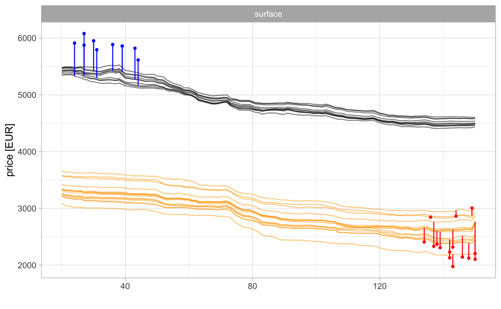
plot(cp_rf_A, cp_rf_E, cp_rpart_F,
color = "_label_", alpha = 0.5, size_points = 4,
selected_variables = "surface",
as.gg = TRUE) + xlab("") + ylab("price [EUR]") + theme_light() + scale_color_discrete(name="")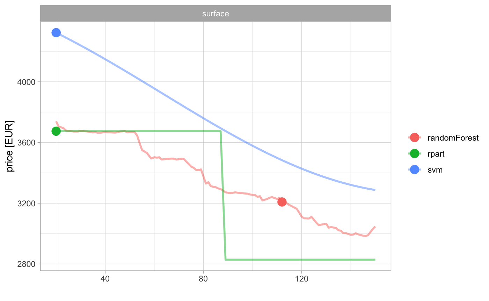
plot(cp_rf_C[as.numeric(cp_rf_C$district) < 8,],
show_profiles = TRUE, show_observations = FALSE,
color = "district", alpha = 1,
selected_variables = c("surface", "district"),
as.gg = TRUE) + xlab("") + ylab("price [EUR]") + theme_light() 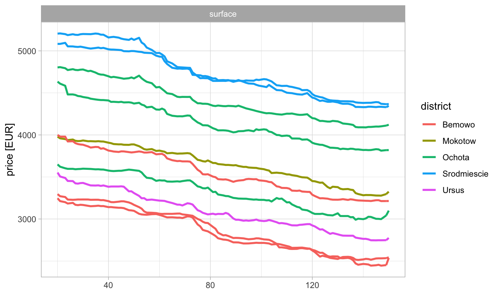
plot(cp_rf_A,
alpha = 0.5, size_points = 4,
as.gg = TRUE) + xlab("") + ylab("price [EUR]") + theme_light()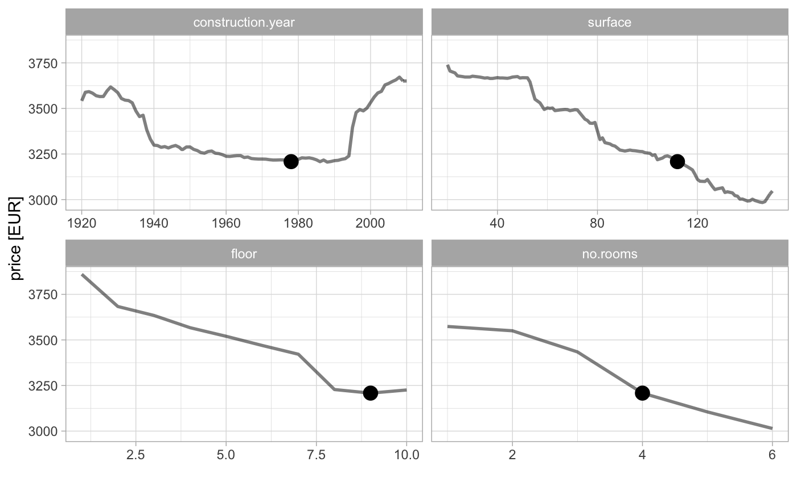